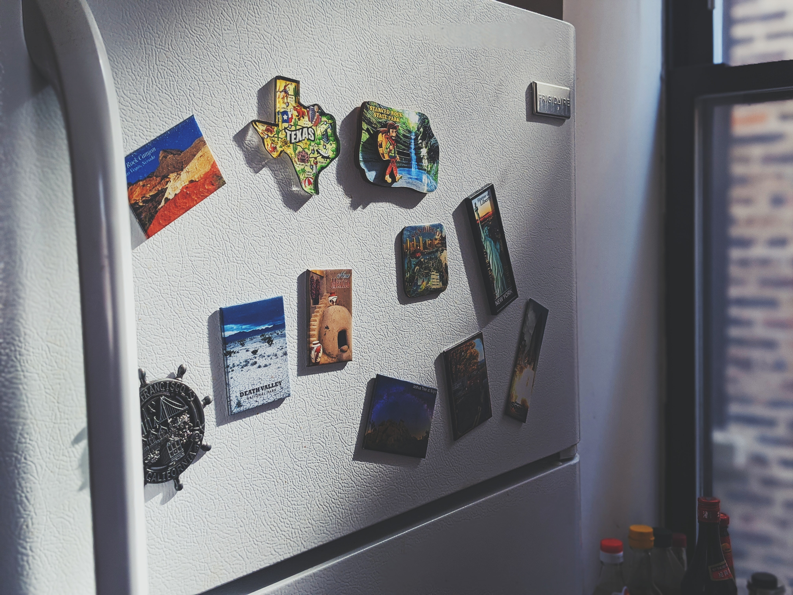

TV

GARANSI PANEL 3 TAHUN + GARANSI SPAREPART 1 TAHUN
READY STOK !
SILAHKAN LANGSUNG ORDER SAJA 😁
GRATIS ANTENA DIGITAL! (selama ketersediaan masih ada)
GRATIS PACKING KAYU (khusus pengiriman dengan JNE)
PAKET ANDA PASTI AMAN DENGAN PERLINDUNGAN MAKSIMAL
*SILAHKAN KIRIM PESAN UNTUK INFO LEBIH DETAIL ATAU INGIN MENGAMBIL SENDIRI
*PENGIRIMAN DARI JAKARTA BARAT
*UNTUK JAKARTA DAN TANGERANG DAPAT MENGGUNAKAN OJOL INSTAN
SPESIFIKASI:
- Super Bright HD Ready Panel (1366*768)
- Dolby Digital plus(Decoder)
- Boundless Screen (Bezel Less)
- Anti Flickering Eye Protection
- Youtube
- Seraphic Browser
- Coocaa Launcher and Service
- Coocaa Apps Store
- Miracast
- Subtitle
- Digital TV Receiver (DVB T/T2)
- Fastboot
- AC Input Range: 100-240V
- HDMI 2 port
- USB 1 Port
Bisa cicilan hingga 12 BULAN! STOK TERBATAS
Membeli berarti telah menyetujui syarat dan ketentuan toko!
TIDAK TERIMA RETUR bila tidak ada video unboxing!*
(Sertakan video unboxing sejak paket diterima dalam kondisi utuh hingga testing produk. MAKSIMAL
3 HARI sejak paket diterima)
MESIN CUCI

GARANSI TOKO 3 BULAN
BARANG BARU
FUNGSI NORMAL DAN BAGUS
DAMAGE BOX
HARGA DIBAWAH PASARAN
MINUS GARANSI RESMI
MOHON MENANYAKAN KETERSEDIAN STOK BARANG TERLEBIH DAHULU SEBELUM MELAKUKAN TRANSAKSI.
TOKO HANYA MELAYANI PENGIRIMAN WILAYAH JADETABEK (JAKARTA, DEPOK, TANGERANG, BEKASI)
Note:
Transaksi bisa melalui aplikasi dan bisa COD (bayar di tempat).
Specification (WM) (-)
Model NEW MEGAMOUTH INVERTER SERIES MM 2.0
Body Metal
Colour Titan Silver
Tube Type Stainless Steel
Standard Water Volume -
Wash Programme 9
Power Consumption 170 w
Power Source -
Weight Nett / Gross (kg) 31/35
Width (mm) 530
Depth (mm) 585
Height (mm) 956
Capacity (kg) 8.5kg
KULKAS

GARANSI RESMI
GARANSI 1 TAHUN SPAREPART 10 TAHUN KOMPRESOR
MOHON MENANYAKAN KETERSEDIAN STOK BARANG TERLEBIH DAHULU SEBELUM MELAKUKAN TRANSAKSI.
TOKO HANYA MELAYANI PENGIRIMAN WILAYAH JADETABEK (JAKARTA, DEPOK, TANGERANG, BEKASI)
PAKET ANDA AKAN DIKIRIMKAN MENGGUNAKAN KURIR TOKO
[Fitur Produk]
*Direct Shelf Cooling*
Pendinginan langsung dari tiap rak yang menawarkan kecepatan dan performa pendinginan lebih
baik.
*Smart Storage*
Simpan dengan penataan lebih baik. 6 rak dan 1 laci ditambah rak pada pintu memberi keleluasaan
lebih dalam menata.
*Bio Shield*
Berbentuk lapisan khusus pada karet yang melingkar pada tepian pintu kulkas, mencegah tumbuhnya
jamur dan bakteri. Selain menjaga kesehatan, juga memberikan ketahanan lebih pada usia pakai
kulkas.
*Desain*
Desain kulkas baru yang mewah dan ergonomis! Pengguna dapat memegang handel saku dengan nyaman.
*Smart Inverter Compressor*
Kompresor Smart Inverter memiliki teknologi canggih yang membawa penghematan listrik pada
tingkat lebih tinggi.
*Moist Balance Crisper, Tingkat Kelembapan Optimal*
Menguapkan sisa air dari makanan dan membentuk embun pada molekul-molekul yang berembun di
makanan Anda, sehingga menjaga keseimbangan embun di dalam kotak.
*Convertible Box Lebih Besar*
Kotak sayuran besar memberikan ruang penyimpanan sekitar 15,9L.
*Semi Auto Defrost*
Cukup tekan tombol defrost maka pencairan akan dimulai. Kulkas akan bersih setelah 2 jam.
Bersihkan es dengan mudah dari dalam lemari es Anda.
*Tempered Glass Shelves*
Rak tempered glass kuat untuk menahan barang berbobot sampai 150kg.
Spesifikasi
Tipe: Freezer 1 Pintu Direct Shelf Cooling - Smart Inverter Compressor
Kapasitas: 171L / 165L
Warna: Platinum Silver
Dimensi: 530 x 1300 x 600
Rate Input: 80W
Direct Cooling: Yes
Bio Shield: Yes
Door Shelf: Yes
Bisa cicilan hingga 12 BULAN! STOK TERBATAS
Membeli berarti telah menyetujui syarat dan ketentuan toko!
TIDAK TERIMA RETUR bila tidak ada video unboxing!
(Sertakan video unboxing sejak paket diterima)